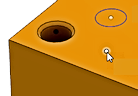

Sélection d'arête de fonction
Sélection de point d'esquisse
Sélection de cercle d'esquisse
Indique le nombre de points, de cercles ou d'arêtes sélectionnés pour le perçage.
Points sélectionnés - Sélection basée sur la géométrie.
|
 |
|
Sélection d'arête de fonction |
Sélection de point d'esquisse |
Sélection de cercle d'esquisse |
Remarque: pour sélectionner des fonctions de modèle, définissez le mode de perçage sur Faces sélectionnées.
L'utilisation de sélections basées sur un modèle garantit l'associativité aux éventuelles modifications ultérieures apportées à la fonction.